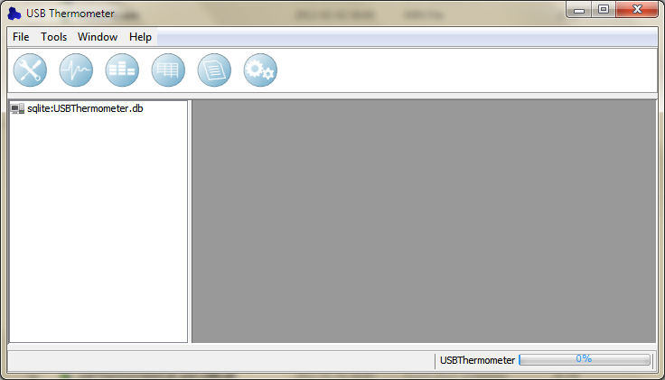
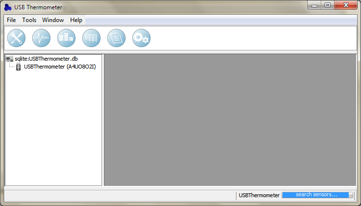
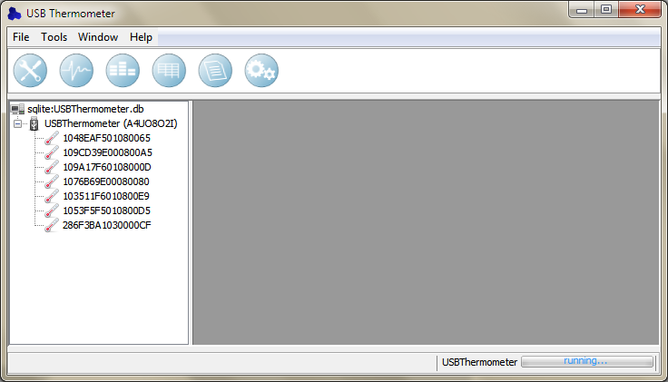
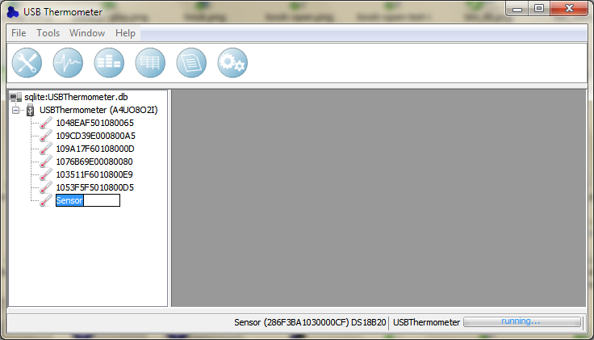
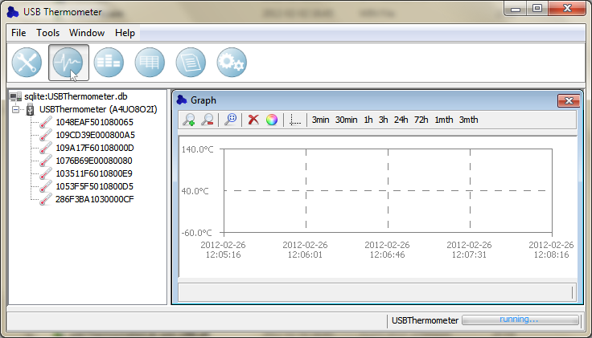
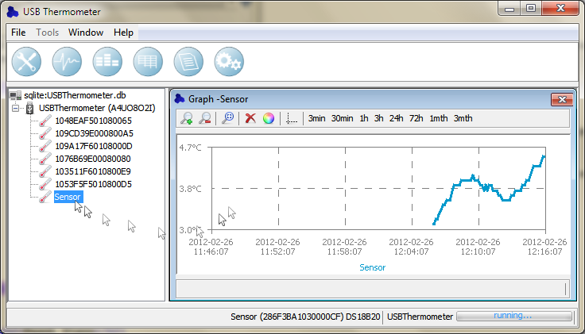

First run
The first time the application runs the main window will be look like follows. There are no
data presentation windows. The USB Thermometer device has not been connected yet.

After the device has been connected, under the icon of database a new device will appear.
The application will start searching of sensors connected to the device.

At the end of sensors searching they will be displayed under the icon of the device. From this
moment the application is running. It means temperatures are logged to the database now.

How to change a sensors name
It is possible to change names of found sensors. In order to do this select a sensor you
like and click twice the left mouse button or the F2 key on the keyboard. Type a new name and confirm.

Data observation
In order to display a graph of temperature click the Graph icon. The new internal window will be opened.

To display a graph of temperature, select the sensor you like, drag over newly opened window and drop.
The sensor will be added to the graph. The new data set will be displayed.

In other cases sensors are added to the data presentation windows (tables, graphs, bar graphs, reports)
using the same method of drag and drop.
|